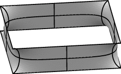
Mirror symmetry occurs when a plane divides a surface into two pieces that are identical under reflection through the plane. For smooth surfaces, that implies the surface is perpendicular to the mirror plane. Mirror planes can be implemented in Evolver as level-set constraint planes with 90 degree contact angle, i.e. no energy integral. However, if there are body volumes and the mirror plane is not vertical or the z = 0 plane, then there will be content integrals.As an example, consider the catenoid-like soap film between two parallel squares, as shown at right. There are five mirror planes: three on the coordinate planes x = 0, y = 0, z = 0, and two diagonal vertical mirrors. This surface has 16-fold symmetry, meaning that the full surface is composed of 16 fundamental regions. This means a 16-fold savings in memory and speed by evolving only one fundamental region.
The datafile sqcat.fe defines one fundamental region, as shown on the left below. The bare lines are included to orient you by showing the coordinate axes and a diagonal line on a diagonal mirror. Run sqcat.fe, and after suitable evolving, you should get the image on the right.
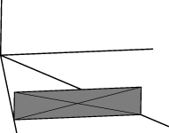
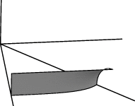
a b c tx d e f ty g h i tz 0 0 0 1The upper left 3 x 3 submatrix being the rotation/reflection part leaving the origin fixed and the rightmost column being the three components of translation. The bottom row is always 0 0 0 1, unless you are doing tricky things with perspective or noneuclidean geometry.
By defining additional view transformation matrices, you can have Evolver display a transformed copy of the image for each matrix. You define these additional matrices relative to surface coordinates, so the matrix for the original image is just the identity matrix, which you don't have to define since it is always there. To design your own matrices, you need only realize that the columns are the transforms of the directions of the unit basis vectors, and the right hand column is the transform of the origin. Thus a mirror reflection in the z = 0 plane is
1 0 0 0 0 1 0 0 0 0 -1 0 0 0 0 1and a reflection in the y = 1 plane would be
1 0 0 0 0 -1 0 2 0 0 1 0 0 0 0 1There is syntax to list transformation matrices one by one in the datafile, but it gets tedious to write down 15 matrices. Therefore Evolver permits one to list just a few basic transforms and then form multiple compound transformations at runtime. This feature is called "view_transform_generators". The datafile sqcat.fe has three generators defined in it:
// For viewing multiple copies of the fundamental region view_transform_generators 3 // generator A: reflection in z_mirror 1 0 0 0 0 1 0 0 0 0 -1 0 0 0 0 1 // generator B: reflection in y_mirror 1 0 0 0 0 -1 0 0 0 0 1 0 0 0 0 1 // generator C: reflection in xy_mirror 0 1 0 0 1 0 0 0 0 0 1 0 0 0 0 1Note you put the number of generators after view_transform_generators so Evolver knows how many to expect. The generators are referred to at runtime by letter in alphabetical order of their listing.
At runtime, you invoke transforms with the "transform_expr" command, which is followed by a quoted string of generators, such as
Enter command: transform_expr "abababc"Evolver forms the set of view transforms by taking all possible ordered substrings of the given string and multiplying the corresponding generators together. Thus a string of N letters has the potential for generating 2N transformations. However, duplicate transformations are discarded, so you do not need to worry about overflowing your memory with transformation matrices. With your sqcat.fe displayed, try some transformations:
| transform_expr "a" | 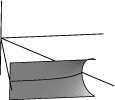 |
| transform_expr "b" | 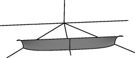 |
| transform_expr "c" | 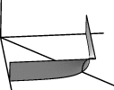 |
| transform_expr "ab" | 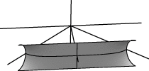 |
| transform_expr "abc" | 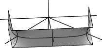 |
| transform_expr "abcabc" | 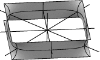 |
Note: The transform generators don't have to be independent, and you can give as many as you want, whatever you find convenient. I've often used seven or eight, and have handy files full of standard sets of generators.
| As an example, consider a simple string network in a 2D torus whose unit cell is a square, shown at right. The network consists of three edges joining two points. The blue square border is just to outline the square; it is not part of the network. |
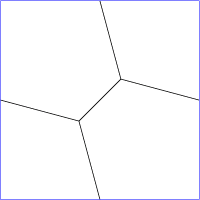 |
| The square can tile the entire plane: |
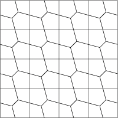 |
| And if we remove the blue lines, which aren't really there, we get what the network looks like to an inside observer. He sees a network that is periodic in two directions. It looks to him as if it repeats exactly because he is really seeing the same stuff over and over again as his line of sight goes out. |
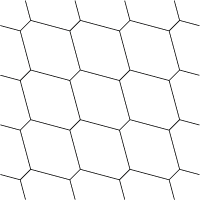 |
Torus mode datafile. Telling Evolver to work in a torus is pretty simple: in the top of the datafile, give it the keyword "torus" and list the period vectors, i.e. the side vectors of the unit cell, one per row:
torus periods 1 0 0 1
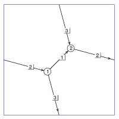
The vertices are listed as usual. It doesn't matter if the vertex coordinates are exactly inside the unit cell; the unit cell sides are quite flexible and can wiggle around to accommodate wandering vertices. Listing edges is a little trickier; each edge has the potential to wrap around the torus. Each edge is followed by symbols to indicate how it wraps, one symbol for each dimension: '*' means no wrap, '+' means go off the positive side and come back on the other side, and '-' means go off the negative side and come back on the other side. So an edge (e.g. edge 2 at right) whose wrap is "+ *" will go off the right side and come back on the left, but it won't cross the top or bottom of the unit cell. Faces and bodies are listed as usual.Here is the full datafile for the example pictured at right, tor2D.fe:
// tor2D.fe // Simple example of 2D torus space_dimension 2 string torus periods 1 0 0 1 vertices 1 .3 .3 2 .7 .7 edges 1 1 2 * * 2 2 1 + * 3 1 2 * - faces 1 1 -3 -2 -1 3 2 bodies 1 1Run tor2D.fe. When you show graphics, it will ask whether you want to display raw facets (edges just plotted from their tail vertex positions, regardless of wrapping), connected bodies (which makes each body display contiguously), or clipped (which shows everything wrapped and clipped to exactly the unit cell). For now, choose clipped. You can toggle showing the bounding unit cell by hitting 'o' with the mouse in the graphics window. Evolve with "g 5" to see the network shorten.
Note: The entries in the periods can be entered as formulas involving variables, and the formulas will be re-evaluated when a "recalc" command is given. By changing the variables and doing "recalc", you can change the shape of your unit cell at runtime, to do shearing and suchlike.
Torus duplication. As an aid in making larger periodic foams from smaller ones, Evolver has a feature called "torus duplication". The 'y' command followed by a dimension number will caused everything to be duplicated in that direction. Try this sequence with tor2D.fe, resetting the graphics window with 'R' after each command to see its effects:
y 1 y 2 y 1 y 2If you give the 'v' command, you will see that Evolver has created individual new bodies for all the duplicates.
With this many-bodied foam, it will be clearer what the raw and connected display options do. Give the command "connected", and you should see all the cells displayed in one piece each. Give the command "raw_cells" and you will see each edge plotted in its actual internal position. You should rarely use "raw_cells"; use "connected" or "clipped" depending on what you want to see.
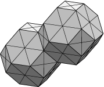
Kelvin foam. Now on to a 3D torus example. This is the famous foam conjectured by Lord Kelvin to be the most efficient subdivision of space into equal volume cells. Kelvin's foam consists of identical 14-sided polyhedra arranged in a body-centered cubic lattice. The file twointor.fe has two Kelvin cells in a cubic unit cell. Run it, and choose the "connected" option for display. If you refine and evolve a couple of times, you will see that the cells do not remain flat; they slightly curve, making the precise calculation of area difficult without something like the Evolver.
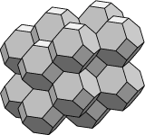
Torus models automatically include translations along the period vectors as transform generators. To see a larger chunk of Kelvin's foam, give the commandtransform_expr "abc"
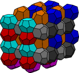
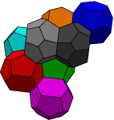
Weiare-Phelan foam. To see the world-famous Weiare-Phelan foam that beats Kelvin's foam for efficiency, run phelanc.fe. This has eight bodies in a cubic unit cell. Two are pentagonal dodecahedra (the green and blue), and six are 14-hedra with 12 pentagons and 2 hexagons. If you display a larger piece with transform_expr "abc", you can see that the 14-hedra are arranged in three sets of perpendicular columns with the dodecahedra filling the gaps between columns. Again, refining and evolving show that the optimal foam has curved faces.Redundant volume constraints. One thing to be aware of in using the torus mode is that if you fill the torus with bodies whose volumes are all fixed then your volume constraints are redundant, in the sense that one body's volume is determined once all the other bodies' volumes are known. Redundant constraints are a problem since Evolver's method of satisfying constraints involves inverting a matrix of constraint gradients, and redundant constraints lead to the inversion of a singular matrix. Evolver will complain if the matrix is exactly singular, but often it isn't quite due to numerical imprecision, but the result can still be very bad. Thus whenever you are filling a fixed volume with fixed volume bodies, you should leave one body volume unfixed. Evolver can handle that automatically if you give the "torus_filled" keyword in the top of the datafile instead of "torus". This has the advantage over doing it by hand that if you happen to delete the unfixed body in the course of evolution, then Evolver will automatically unfix another body. In the 'v' command output, that body still shows up with a target volume, but the pressure is 0. For an example, run phelanc.fe, evolve a bit, and do 'v'.
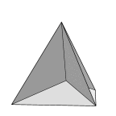
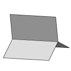
All the popping commands are based on a soapfilm model. The laws of structure of soap films were discovered in the nineteenth century by the Belgian physicist Plateau, and say that the only stable ways for soap films to join is three films along a curve or six films and four triple lines meeting at a "tetrahedral point".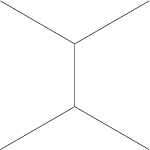
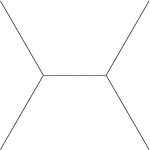
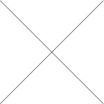
According to Plateau's Laws for the structure of soap films modified for 2D networks, only threefold junctions of films are stable. A four-fold junction will split into two three-fold junctions. It is often possible to split two different ways, as shown at right. Evolver can pop 4-fold and higher vertices by successively pulling out adjacent pairs of edges to make a new triple vertex. Run the file x.fe, which has a four-fold vertex. Do the 'o' command, which pops all poppable vertices. Evolve a bit after popping to get the minimal network. An alternative to 'o' which is more selective is the "pop" command, for example "pop vertex[1]".
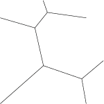
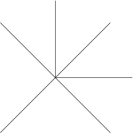
To see what happens to a higher valence vertex, run x6.fe, do 'o', and evolve.
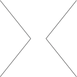
Sometimes you don't want to put a new edge across the gap, but rather connect two parts of the same body. To do this mode of popping, set the "pop_disjoin on" toggle and use 'o' or "pop". The file x.fe has the top and bottom facets belonging to the same body, so if you run x.fe and dolist facets pop_disjoin o list facetsyou will see the top and bottom facets merged. (Don't worry about the negative areas reported by "list facets"; those are due to facets not being completely surrounded by edges.)
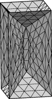
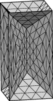
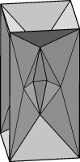
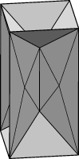
3D Edge popping. Edge popping in 3D is much like vertex popping in 2D, but with the added complication that edges are extended and thus a pop has to propagate along an edge until it reaches some barrier. The basic popping works by pulling out adjacent wedges of facets and creating new triple edges. If the chain of poppable edges is just one edge long, like the central vertical edge in the first figure at right, then that edge is split in two to enable a septum to form. If the chain is longer, as in the third image, then no splitting is necessary. To do the one-edge pop, run edgepop.fe and do 'O'. For the multi-edge pop, run edgepop.fe and do "r; r; O".
Any vertex with more than four triple edges adjoining it is unstable by Plateau's Laws. Evolver has a general algorithm (described below) that handles all cases, but it tends to give a messy result with far more new facets than are really needed. So I have been adding special routines to handle common cases efficiently, and I will describe these first.
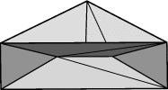
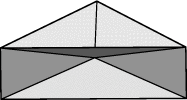
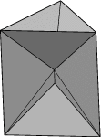
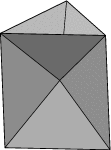
6-fold triple lines (triangular prism cone). This vertex can pop two different ways, either to a vertical edge in the middle or a horizontal triangle. There is a range of heights over which both are possible; Evolver has an arbitrary cut-off in the middle. To get the vertical edge pop, run triprism.fe and do 'o'. To get the triangle pop, run triprism.fe and do "ht /= 4" and do 'o'.
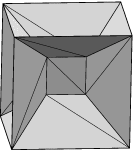
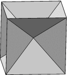
8-fold triple lines (cube cone) The cone over a cube pops to a central square (as in the day 1 exercise). There are three possible orientations of the central square, and Evolver tries to pick the best one. Run the datafile cubecone.fe. This has a symmetric cube cone, and if you do 'o' then it pops to the horizontal square (it did for me, anyway). To encourage popping as shown, reload cubecone.fe and squish a bit in the x direction with "set vertex x 0.9*x", and then do 'o'.
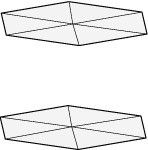
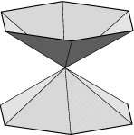
Tall cones, disjoining: cat.fe with evolutionu g 5 t .1 o
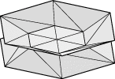
Short cones, getting septum: cat.fe with evolutionu g 5 t .1 zmax := .3 oThe disjoining pop is done regardless of the angles of the cones if the "pop_disjoin" toggle is on.
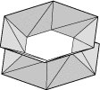
With like bodies inside the cones: catbody.fe with evolutionzmax := .7 u unset body[1].target g 5 t .1 zmax := .3 o
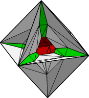
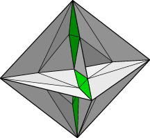
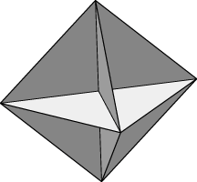
For an example, run octa.fe; this is a cone on an octahedral frame. The surface has six quadruple edges meeting at the center. Evolve thusly:O // just pop the edges set facet color green where area < .01 // septum facets are very small g 10 // septums expand so you can see them o // pop the vertexThe middle image at right shows the surface right before vertex popping, with popped edge septums in green. The far right image is after popping the vertex, with the central sphere in red, looking into the omitted face. Run octa-pop.fe to see the colored version from all sides and see how the central sphere algorithm works. Of course, you must now do much more evolving to get the final surface. The messiness of this pop means such evolution will require a lot of triangulation grooming and maybe further popping.
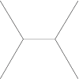
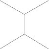
2D T1 edge flip. This is the basic topology change that happens in the evolution of 2D foams and grains. One edge rotates 90 degrees and changes its pair of adjacent cells. This could be done in a two-step process, delete the short edge and pop the resulting four-fold vertex, but the direction of the popping is too uncertain. The Evolver command to do this is "t1_edgeswap", as int1_edgeswap edge[5]Example: Run x.fe, do 'o', then "t1_edgeswap edge[5]". The edge must join two triple points. Unlike the other pop commands, it is not a good idea to apply this wholesale, i.e. "t1_edgeswap edges", since this can mess up the network badly.
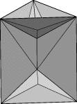
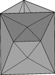
pop_tri_to_edge. This converts a triangle to an edge, as shown at right. Run tri2edge.fe and do "pop_tri_to_edge facet[1]".
pop_edge_to_tri. This is the reverse transformation from pop_tri_to_edge. It converts an edge to a triangle, as shown at right. Run edge2tri.fe and do "pop_edge_to_tri edge[1]".
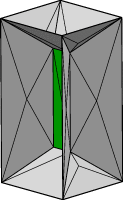
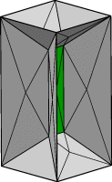
pop_quad_to_quad. This is a 3D version of the 2D T1 transition. A quadrilateral (green in the images at right) changes its pair of ajacent bodies. The Evolver command is "pop_quad_to_quad" and you give it one of the facets of the quadrilateral as an argument. For example, run quad2quad.fe and do "pop_quad_to_quad facet[13]". There can be any number of facets in the quad; Evolver just needs to find a loop of four triple edges starting next to the given facet.
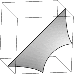
Create a soapfilm in a cube whose boundaries are a fixed wire on an edge-to-edge diagonal of the cube and free boundaries on three of the faces of the cube. Create view transform generators for 180 degree rotation around the diagonal and reflection in the three cube faces that have the free boundaries on them. Evolve the surface so it looks smooth, then use transform_expr to replicate the images to form a triply periodic minimal surface.